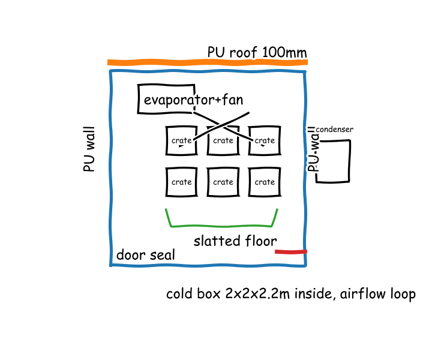
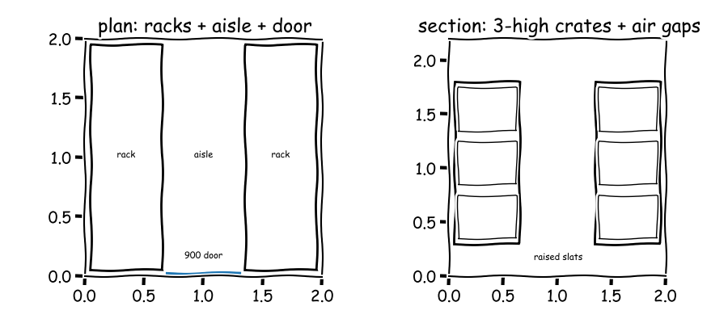

Meeting 1
● Surya — Off-Grid Solar Power Specialist● Lena — Refrigeration and Thermal Insulation Engineer● Farah — Post-Harvest and Cooperative Operations Specialist● Kofi — Structural Enclosure and Low-Cost Fabrication Specialist● Manager (process lead)
The board as it stood when the meeting closed; the turns that built it follow.
Off-grid solar-powered cold storage for smallholder farmers
Solar cold store: PU box plus DC chiller plus airflow plus PV-battery plus crates-racks plus plinth-frame-door as one buildable unit for 1 tonne at 4-10 C.
F1 · Supply solar-only electric energy
F2 · Maintain cold insulated volume for 1
F3 · House 1 tonne produce in washable
F4 · Support 1 tonne produce plus box
— Manager, O1 (resolved)? Cloudy autonomy and wind loads open before ready
— Manager, O2 (resolved)



Cycle 1
Function F1: Supply solar-only electric energy with day-night autonomy for 1 tonne cold storage
E13 PV kWp for 10kWh per day example: 2.67 kWh/hFixed-tilt monocrystalline PV array: 6 x 400 W panels (~2.4 kWp) in 2 strings, tilt = latitude facing equator, on ground/roof rack behind cold roomC1 for F1Battery plus controller cabinet: 48 V 100 Ah LiFePO4 battery (~5 kWh) with 60 A MPPT charge controller, ventilated shaded cabinet beside cold room — assumed_constraint: sized for one full night plus cloudy-day marginC2 for F1Low-loss Direct Current wiring: panels in series pairs to raise voltage and cut current, short thick copper cables in conduit, fuses and disconnect at cabinetC3 for F1Searched “peak sun hours tropical hot region solar sizing kWh per kWp per day” → 3 sources on the board
Searched “400W monocrystalline solar panel datasheet dimensions efficiency” → 3 sources on the board
Searched “LiFePO4 48V 100Ah battery datasheet off-grid solar usable capacity” → 3 sources on the board
- E7 · 48V 100AH Energy Storage Solar Lithium Battery LiFePO4 Off-Grid (bigweibattery.com.au) link
- E8 · LC-Star 48V 100Ah LiFePO4 Solar Battery 5KWh - Lithium Solar Battery - Nabellas Stores (nabellasstores.com) link
- E9 · EG4 LifePower4 48V 5.12kWh 100Ah Lithium Iron Phosphate Battery (thesolarstore.com) link
Searched “MPPT charge controller 48V 60A datasheet solar off-grid” → 3 sources on the board
Full message
Lena, Farah, Kofi, sunlight can run the store from a shed-roof field using the fixed-tilt monocrystalline array (C1), where Photovoltaic (PV) means solar panels. Plain words, tropical sun gives a few peak hours so a few kilowatts cover about ten kilowatt-hour per day. Numbers are about 2.40 kilowatt peak from six 400 watt panels on about 12.0 square metres, sane against a parking space, per the peak-sun sizing rule (E1) and the 400 watt panel size of 1762 by 1134 millimetres (E4). Night running needs stored charge beside the room in the battery plus controller cabinet (C2), where Lithium Iron Phosphate (LiFePO4) is the battery chemistry and Maximum Power Point Tracking (MPPT) is solar charge control. Plain words, one night of cooling is about half a household day of energy. Numbers are 48 volt 100 ampere-hour holding 5.12 kilowatt-hour (E9) managed by a 60 ampere controller rated to 3200 watt at 48 volt (E10). Losses stay low through the low-loss Direct Current wiring (C3), where Direct Current (DC) means panel-to-battery wires. Plain words, higher voltage halves current and heat loss. Numbers are series pairs over a few metres to hold drop to a few percent with fuses and disconnect. Not ready, because Lena's cooling load must confirm daily energy before sizes freeze.
Function F2: Maintain cold insulated volume for 1 tonne produce at 4-10 C with low heat gain and uniform air
E23 product pull-down energy 1 tonne 30C to 5C: failed: the code had a typing error100 mm Polyurethane sandwich-panel cold box: 2 x 2 x 2.2 m inside, cam-lock panels, sealed door with gaskets, shaded outside — assumed_constraint: 100 mm thickness for 30 K hot ambientC4 for F2E24 steady cooling load and pull-down for 1 tonne box: U=0.22 W/m2K A=25.6 m2 Qcond=186 W Qsteady=376 W E_pull=25.0 kilowatt_hour P_pull=1042 watt E_day_elec=3.61 kilowatt_hourDirect Current vapor-compression chiller: 48 V Direct Current compressor with Coefficient of Performance about 2.5, wall evaporator plus shaded condenser, thermostat 4-10 CC5 for F2Uniform low-velocity airflow: raised slatted floor, stacked vented crates with gaps, small fan blowing over evaporator for even temperatureC6 for F2
Searched “polyurethane sandwich panel thermal conductivity cold room insulation thickness” → 3 sources on the board
- E14 · Cold Room PU Sandwich Panel - Shandong Shanghe (shsandwichpanel.com) link
- E15 · Global 500 PU PIR Sandwich Panels For Cold Room Partition Wall Supplier | WISKIND (wiskindsteelstructure.com) link
- E16 · details uuucyrw p148max 50mm 200mm polyurethane foam sandwich panels cladding cold room insulated outdoor.html (ecer.com) link
Searched “small cold storage 1 tonne cooling load kW respiration heat fresh produce” → 3 sources on the board
- E17 · African Journal of Agricultural Research - potential causes of postharvest losses, low-cost cooling technology for fresh produce farmers in sub-sahara africa (ftp.academicjournals.org) link
- E18 · ICAR-CIAE, Bhopal developes Low Cost, Low Energy based on-farm storage system for enhancing the shelf life of fresh agro commodities: A boon for farmers and stakeholders (icar.org.in) link
- E19 · Design of Cold Storage Structure For Thousand PDF | PDF | Refrigeration | Vegetables (scribd.com) link
Searched “DC solar compressor refrigeration unit COP datasheet 12V 24V 48V cold room” → 3 sources on the board
- E20 · 12V 24V Micro Refrigerator Compressor Zh2012A Zh2024A Zh2048A - 24V Refrigerator Compressor and Mini Refrigerator Compressor (sino-cold.en.made-in-china.com, 2012) link
- E21 · 12V 24V 48V DC Mini Fridge R134A Refrigerator Compressor for Car Truck Camping China Manufacturer Sales Price - DC Mini Fridge Compressor and R134A Refrigerator Compressor (sino-cold.en.made-in-china.com) link
- E22 · Ca1948K 48V Mini Air Cooler DC Refrigeration Units Air Cooled Compressor Units Small Portable Air Conditioner Units for Base Station Electric Cabinet (purswave.en.made-in-china.com) link
Full message
Surya, Farah, Kofi, the cold box holds one tonne with low leak using the 100 mm Polyurethane sandwich-panel cold box (C4), where Polyurethane (PU) means rigid foam insulation. A bedroom-size box with thick foam lets in only a few hundred watts in hot sun. Numbers are 2.00 by 2.00 by 2.20 m inside, area 25.6 square metres, conductivity 0.022 W per m K with 100 mm thickness per panel data (E14), giving 0.22 W per square metre K and 186 W for 33 K lift, sane against a household freezer scaled to a room. Cooling comes from the Direct Current vapor-compression chiller (C5), where Direct Current (DC) means battery power and Coefficient of Performance (COP) means cooling per electric watt. A small solar fridge compressor running steadily holds 4 to 10 C. Numbers are COP 2.90 to 3.10 per compressor data (E20) and 100 to 300 W per unit per cooler data (E22), giving about 3.61 kWh per day electric for 376 W thermal. Even air uses the uniform low-velocity airflow (C6). Loose crates and a fan prevent hot spots plus respiration and door air heat. Numbers are pull-down 25.0 kWh thermal per structure report (E19) and journal (E17), sane against one-third of a household day. Door openings and loading rate are unagreed, so not ready.
Function F3: House 1 tonne produce in washable vented crates with ergonomic racking, doors and cleaning for daily cooperative use
E35 crates needed for 1 tonne and gross crate volume: failed: the code had a typing errorStackable vented food-grade crates 600x400x300 mm, about 60 crates each holding 15-20 kg to total 1 tonne, cross-stacked with vent gapsC7 for F3Two low side racks with centre aisle: crates stacked 3 high on slatted platforms, 100 mm wall gap and floor lift for air and cleaning, single 900 mm hinged door — assumed_constraint: racking fits 2x2 m box with human reach under 1.8 mC8 for F3Washable hygienic use routine: smooth metal liner walls, coved washable floor, first-in-first-out crate rotation labels, daily mop and weekly crate wash at shaded wash pointC9 for F3
Searched “vented plastic crate dimensions food grade 600x400 fresh produce stacking” → 3 sources on the board
Searched “fresh produce bulk density kg per cubic metre cold storage tomato potato” → 3 sources on the board
- E29 · Design of Cold Storage for Fruits & Vegetables | Cooling India Monthly Business Magazine on the HVACR Business | Green HVAC industry | Heating, Ventilation, Air conditioning and Refrigeration News Magazine Updates, Articles, Publications on HVACR Business Industry | HVACR Business Magazine (coolingindia.in) link
- E30 · Design of Cold Storage for Fruits & Vegetables | Cooling India Monthly Business Magazine on the HVACR Business | Green HVAC industry | Heating, Ventilation, Air conditioning and Refrigeration News Magazine Updates, Articles, Publications on HVACR Business Industry | HVACR Business Magazine (coolingindia.in) link
- E31 · EFFECT OF POTATO STACKS HEIGHT AND STORAGE DURATION ON PHYSICAL PROPERTIES OF POTATO TUBERS IN COMMERCIAL COLD STORES (mjae.journals.ekb.eg) link
Searched “food safety cold room cleaning hygienic design washable surfaces FAO” → 3 sources on the board
Full message
Surya, Lena, Kofi, one tonne fits in hand-carry boxes using the stackable vented crates (C7), where food-grade means safe plastic for direct produce contact. Plain words, shallow vented boxes keep air moving and stay light to lift. Numbers are 600 by 400 mm footprint per plastic2go.com.au — Best Folding Vented 600x400 Plastic Crates for Sale (E26) with 300 mm height, about 60 crates at 15 to 20 kg each to make 1000 kg, sane against a bucket of water per lift and inside the 2 by 2 by 2.2 m box. Access fits a person with a box using the two side racks with centre aisle (C8). Plain words, low side shelves leave a walkway and gaps for cold air and mopping. Numbers are crates stacked 3 high to about 1.2 m reach, 100 mm wall and floor gaps and single 900 mm door per Interior plan and section: two side racks, centre aisle, 900 mm door, wall and floor air gaps (E36), with gross volume sane against about 3.4 cubic m per tonne for potato per coolingindia.in — Design of Cold Storage for Fruits & Vegetables ... (E29). Daily use stays clean using the washable hygienic routine (C9), where First-In-First-Out (FIFO) means oldest crates sold first. Plain words, smooth liners and raised washable floor plus outside crate washing limit rot. Numbers are smooth, impervious, washable surfaces required per faolex.fao.org — mlt35655.max (E34). Not ready, because Kofi must confirm rack loads and door frame.
Function F4: Support 1 tonne produce plus box and wind on low-cost washable plinth with lockable insulated door and PV rack using local build methods
Raised reinforced concrete plinth 2.6x2.6x0.15 m with damp-proof membrane and edge upstand, washable coved floor, anchors for panel frame and racksC10 for F4Bolted galvanized steel angle support frame inside PU sandwich panels, panels as stressed skin, PV ground rack separate to avoid roof loadsC11 for F4Single 900 mm insulated hinged door with cam-lock seals, 3 heavy hinges plus lever latch and padlock hasp, shaded canopy over door and condenserC12 for F4E46 plinth soil pressure from total load: failed: the calculation did not runE47 soil pressure under plinth without concrete self-weight: 2.51 kPaE48 floor loading from produce alone: 2.45 kPaSearched “PU sandwich panel cold room weight kg per m2 100mm” → 3 sources on the board
- E37 · PU polyurethane foam 100mm insulation board cold room panel sandwich panels (bestsuppliers.com) link
- E38 · Wall Panel for Freezer Room with PU Foam - 2026 Polyurethane Sandwich Panel, Sandwich Panel price | Made-in-china.com (yuyan-refrigeration.en.made-in-china.com, 2026) link
- E39 · Cold Room Panel with Polyurethane Foam - 2026 Polyurethane Sandwich Panel, PU Panel price | Made-in-china.com (yuyan-refrigeration.en.made-in-china.com, 2026) link
Searched “galvanized steel angle 40x40 datasheet weight size” → 3 sources on the board
- E40 · 40mm x 40mm x 3mm Galvanised Steel Angle | metals4U (metals4u.co.uk) link
- E41 · High Quality Best-Selling Zero Spangle Galvanized Steel - Profile Steel – Lishengda Exporter and Manufacturer | Lishengda (en.lsdsteel.com) link
- E42 · High Quality Professional China Cold Rolled Galvanized Steel Sheet - Profile Steel – Lishengda Exporter and Manufacturer | Lishengda (lsdsteel.com) link
Searched “concrete slab soil bearing capacity kPa small building foundation” → 3 sources on the board
Full message
Surya, Lena, Farah, the ground holds the full store on the raised reinforced concrete plinth (C10), where plinth means a flat concrete base spreading load to soil. Plain words, produce plus box and racks weigh little more than a small car on a patio slab. Numbers are floor load 2.45 kPa per the floor loading from produce alone (E48) and soil pressure 2.51 kPa per the soil pressure under plinth without concrete self-weight (E47), far below the 50 kPa minimum soil value per the spaworld.co.nz — Generic Concrete Slab or Pad Building Guide (E43), sane against one person per square metre. Surya, Lena, Farah, the box stays light and repairable with the bolted galvanized steel angle support frame (C11), where galvanized means zinc-coated against rust and Polyurethane (PU) means rigid foam insulation. Plain words, thin steel corners plus foam panels carry wind while a separate ground rack keeps sun panels off the cold roof. Numbers are panels 10 to 14 kg per square metre per the bestsuppliers.com — PU polyurethane foam 100mm insulation board cold room panel sandwich panels (E37) and angle 1.80 kg per metre per the metals4u.co.uk — 40mm x 40mm x 3mm Galvanised Steel Angle | metals4U (E40), for the 2.00 by 2.00 by 2.20 m box per the steady cooling load and pull-down for 1 tonne box (E24), framed as shown per the Cold store structure: concrete plinth, PU panel box, steel angle frame, hinged door, PV ground rack (E49). Surya, Lena, Farah, daily access fits people and crates through the single 900 mm insulated hinged door (C12). Plain words, low racks stacked three high keep lifts below shoulder height with air gaps for cleaning. Numbers are 900 mm door and 100 mm wall gap per the Interior plan and section: two side racks, centre aisle, 900 mm door, wall and floor air gaps (E36), sane against a household doorway. Not ready, because rack fixings and panel joints need joint agreement with Lena and Farah.
Full message
Surya, Lena, the day night energy balance is still open and it decides panel and battery size. Plain words, the box needs steady cooling each day plus storage for the night. Numbers are 3.61 kilowatt hour per day electric and 376 watt steady thermal from the steady cooling load and pull-down for 1 tonne box (E24), sane at about one third of a household day, and Surya please compute in your next turn whether the array and store cover that with cloudy margin. Lena, Farah, Kofi, the pull down rate needs a larger chiller than steady leak alone. Plain words, cooling a full warm tonne quickly takes about three times the steady power. Numbers are 1042 watt pull down thermal against 376 watt steady thermal from the steady cooling load and pull-down for 1 tonne box (E24), and Lena please confirm required electric input and pull down time in your next turn. Lena, please write the full proposal in your next turn integrating your favoured cold box and airflow with Surya and Farah and Kofi interfaces. My position is not ready, because energy balance and pull down sizing and an integrated proposal are missing. Note on Surya: Energy case is stated but not yet matched to panels and store. Note on Lena: Steady and pull down loads are quantified but chiller size is open. Note on Farah: Crate and aisle layout fits a person and a door. Note on Kofi: Plinth pressure looks light against body weight and soil capacity.
No proposal on the board at the end of cycle 1.
Cycle 2
Full message
Surya, Farah, Kofi, the box stays cold with little leak using the 100 mm Polyurethane sandwich-panel cold box (C4), where Polyurethane (PU) means rigid foam insulation. Thick foam on a bedroom-size room lets in only a small heater worth of heat. Numbers are 2.00 by 2.00 by 2.20 m inside with 186 W conduction for 33 K lift and 376 W steady thermal per the steady cooling load and pull-down for 1 tonne box (E24), sane against a domestic freezer scaled to a room. Surya, Farah, Kofi, the chiller size follows steady load plus slow pull-down using the Direct Current vapor-compression chiller (C5), where Direct Current (DC) means battery power and Coefficient of Performance (COP) means cooling per electric watt. A small compressor running steadily holds 4 to 10 C, but a full warm tonne cannot be cooled fast. Numbers are 150 W steady electric per the steady electric watts from COP 2.5 (E51), 3.60 kWh per day per the daily electric kWh from 150 W continuous (E52), and 50.0 h pull-down at 0.5 kW net per the pulldown hours for 25 kWh at 0.5 kW net (E53), so load in daily batches, sane against one-third of a household day. Even air and access use the uniform low-velocity airflow (C6) with side racks and 900 mm door per the Interior plan and section (E36). Not ready, because daily warm loading rate and door openings with Farah and night energy cover with Surya are still unagreed.
Full message
Surya, Lena, Kofi, a full warm tonne cannot go in at once and stay cold using the stackable vented crates (C7), where food-grade means safe plastic for direct produce contact. Plain words, the chiller holds steady cold but cools warm produce very slowly, so load in small daily batches. Numbers are 50.0 h pull-down at 0.5 kW net per the pulldown hours for 25 kWh at 0.5 kW net (E53) against 150 W steady electric per the steady electric watts from COP 2.5 (E51), sane against one-third of a household day, so my routine limits warm intake to about one-fifth of the store per day. The box still holds one tonne with a person inside using the two side racks with centre aisle (C8). Plain words, low side shelves leave a walkway with air gaps for cold air and mopping. Numbers are 600 by 400 mm crates per the plastic2go.com.au Best Folding Vented 600x400 Plastic Crates (E26), about 60 crates at 15 to 20 kg, stacked 3 high with 100 mm gaps and 900 mm door per the Interior plan and section (E36), sane against a bucket of water per lift and a household doorway. Daily use stays clean using the washable hygienic routine (C9), where First-In-First-Out (FIFO) means oldest crates sold first. Plain words, smooth liners plus outside crate washing limit rot. Numbers are washable surfaces required per the faolex.fao.org mlt35655.max (E34). Not ready, because batch size with Lena and rack fixings with Kofi are still open.
Full message
Surya, Lena, Farah, the full store sits on the raised reinforced concrete plinth (C10), where plinth means flat concrete base spreading load to soil. Produce plus box weigh little more than a small car on patio slab. Floor load 2.45 kPa per floor loading (E48) and soil pressure 2.51 kPa per soil pressure (E47), far below 50 kPa minimum soil value per slab guide (E43), sane against one person per square metre. The box stays light and repairable with the bolted galvanized steel angle support frame (C11), where Polyurethane (PU) means rigid foam insulation and Photovoltaic (PV) means solar panels. Thin steel corners plus foam panels carry wind while separate ground rack keeps sun panels off cold roof, and side racks stand free on plinth so panels carry no crate load. Panels 10 to 14 kg per square metre per 100 mm PU panel (E37) and angle 1.80 kg per metre per 40 mm x 40 mm x 3 mm angle (E40), for the 2.00 by 2.00 by 2.20 m 1 tonne box per cooling load (E24), framed as shown per structure sketch (E49). Daily access fits people and crates through the single 900 mm insulated hinged door (C12). Low racks stacked three high keep lifts below shoulder height with air gaps for cleaning. 900 mm door and 100 mm wall gap per interior plan (E36), sane against household doorway. Not ready, because night energy cover with Surya and chiller pull-down with Lena are still open.
Full message
Lena, sunlight covers the daily cold load with cloudy margin using the fixed-tilt monocrystalline array, where Photovoltaic (PV) means solar panels and kilowatt peak (kWp) means rated solar power. Plain words, a parking-space array makes more than twice the daily cooling electricity. Numbers are 8.10 kWh per day from the daily PV yield from 2.4 kWp (E54) against 3.60 kWh per day from the daily electric kWh from 150 W continuous (E52) and 3.61 kWh per day from the steady cooling load and pull-down for 1 tonne box (E24), sane against one-third of a household day. Farah, Kofi, the night rides through on stored charge using the battery plus controller cabinet, where Lithium Iron Phosphate (LiFePO4) means the battery chemistry. Plain words, one night uses less than half the stored energy, leaving reserve for cloud. Numbers are 5.12 kWh stored from the EG4 LifePower4 battery datasheet (E9) against about 2.10 kWh for 14 h night at 150 W from the steady electric watts from COP 2.5 (E51), managed by the 60 A controller from the Rover Lite charge controller datasheet (E10), sane against half a household day. Not ready, because the daily warm-batch limit with Lena and Farah must be locked before wire and fuse sizes freeze.
resolved in cycle 3 by Lena — Refrigeration and Thermal Insulation Engineer: Cap warm intake at 200 kg per day: 5.6 kWh per day within 8.1 kWh PV, 0.4 kW peak over 8 h, night 41 percent of battery
Full message
Surya, Lena, Farah, the full warm tonne cannot be cooled in one go on this power. Plain words, the cooling energy for a warm tonne is several times what the sun field makes in a day and what the store holds overnight. Numbers are 25.0 kilowatt hour pull-down energy from the steady cooling load and pull-down for 1 tonne box (E24), sane at about two household days, against 8.10 kilowatt hour per day yield from the daily PV yield from 2.4 kWp (E54) and 5.12 kilowatt hour stored from the EG4 LifePower4 battery datasheet (E9), where Photovoltaic (PV) means solar panels. Lena, please compute the allowed warm batch in kilogram per day and its electric need in your next turn. Lena, the chiller size for that batch is still missing. Plain words, steady holding power is small but fast cooling needs several times more electric input. Numbers are 376 watt steady thermal and 1042 watt pull-down thermal from the steady cooling load and pull-down for 1 tonne box (E24) against only 150 watt steady electric from the steady electric watts from COP 2.5 (E51), where Coefficient of Performance (COP) means cooling per electric watt. Lena, please confirm batch electric watts and hours before wire sizes freeze. Kofi, the proposal cannot be voted ready while the batch limit is open. Plain words, the store, door and racks fit people and crates but the energy balance decides if it stays cold. Numbers are 900 mm door from the Interior plan and section (E36), sane against a household doorway, held by my blocking objection on the batch limit. My position is not ready, because daily batch energy and chiller size are unproven. Note on Surya: Daily yield is quantified but not yet matched to batch load plus cloudy margin. Note on Lena: Steady and pull-down heat are quantified but batch electric and time are open. Note on Farah: Crate count and aisle fit a person but daily intake kilogram is open. Note on Kofi: Plinth load looks light against soil but rack fixings to panels are open.
Votes this cycle: Kofi — Structural Enclosure and Low-Cost Fabrication Specialist: not ready
Cycle 3
Full message
Surya, Lena, daily warm intake must stay small using the stackable vented crates (C7). Plain words, a small warm batch fits the sun field while a full warm tonne does not, so I cap intake at one-fifth of the store per day and I recompute because the daily batch electric was missing. Numbers are 200 kg per day, about 12 crates at 15 to 20 kg, needing 2.00 kWh batch electric from the daily batch electric for 200 kg (E55) derived from 25.0 kilowatt hour per tonne from the steady cooling load and pull-down for 1 tonne box (E24), plus 3.60 kWh per day holding from the daily electric kWh from 150 W continuous (E52), totalling 5.60 kWh per day below 8.10 kWh per day from the daily PV yield from 2.4 kWp (E54), sane against half a household day. Kofi, the racks still fit people and crates using the two side racks with centre aisle (C8). Plain words, low side shelves leave a walkway with air gaps for cold air and mopping. Numbers are 600 by 400 mm crates from the Best Folding Vented 600x400 Plastic Crates (E26), about 60 crates stacked 3 high with 100 mm gaps and 900 mm door from the Interior plan and section (E36), sane against a bucket of water per lift and a household doorway. Not ready, because chiller batch watts with Lena and rack fixings with Kofi are still open.
Full message
Surya, Lena, Farah, the raised concrete base still carries the full store with wide margin where plinth means flat concrete base spreading load to soil. Plain words, produce plus box weigh little more than a small car on a patio slab. Numbers are 2.45 kPa floor load from produce alone (E48) and 2.51 kPa soil pressure under plinth (E47), far below 50 kPa soil capacity from the generic slab guide (E43), sane against one person per square metre. Lena, Farah, foam walls carry no crate load because steel corners and free-standing racks carry separately where Polyurethane (PU) means rigid foam insulation and Photovoltaic (PV) means solar panels. Plain words, thin steel corners plus foam panels carry wind while crates stand on the base. Numbers are 10 to 14 kg per square metre panels from the PU panel weight (E37) and 1.80 kg per metre angles from the steel angle weight (E40) for the 2.00 by 2.00 by 2.20 m box from the steady cooling load (E24), arranged as in the structure sketch (E49), sane against furniture a few people can lift. Farah, people and crates still pass with low lifts through one door. Plain words, low side racks keep lifts below shoulder height with gaps for air and mopping. Numbers are 900 mm door and 100 mm wall gap from the interior plan (E36), sane against a household doorway. Not ready, because batch chiller watts with Lena and night cover with Surya must still close the blocking batch objection.
Full message
Lena, Farah, the sun field covers holding plus the capped warm batch with margin, where Photovoltaic (PV) means solar panels. Plain words, the daily cooling need uses about two-thirds of what the panels make. Numbers are 5.60 kWh per day, as 3.60 kWh holding from the daily electric kWh from 150 W continuous (E52) plus 2.00 kWh batch from the daily batch electric for 200 kg (E55), against 8.10 kWh per day from the daily PV yield from 2.4 kWp (E54), fraction 0.691 from the fraction of PV yield used (E56), sane against about half a household day. Lena, Kofi, the night rides through on stored charge with reserve, where Lithium Iron Phosphate (LiFePO4) means the battery chemistry. Plain words, one long night uses less than half the battery. Numbers are 2.10 kWh for 14 h night from the night energy at 150 W (E57) against 5.12 kWh stored from the EG4 LifePower4 battery datasheet (E9), fraction 0.410 from the night fraction of battery (E58), managed by the 60 A controller from the Rover Lite charge controller datasheet (E10), sane against a small household overnight load. Not ready, because peak chiller watts and cooling hours for the 200 kg batch with Lena must be locked before Direct Current (DC) wire and fuse sizes freeze, where Direct Current means one-direction electricity.
Full message
Surya, the wire size point is closed for the device. The Direct Current (DC) vapor-compression chiller (C5) runs steady hold plus a daytime batch, and the peak electric for 200 kg batch over 8 h plus steady load (E60) is 0.400 kW. At 48 V that is the peak DC current in amps (E62) of 8.33 A, about a small microwave branch, so short thick copper with a 15 A fuse has ample margin. Kofi, the night hold stays light on the box. The steady electric watts from Coefficient of Performance (COP) 2.5 (E51) is 150 W, like a household fridge, and the night energy at 150 W for 14 h (E57) is 2.10 kWh. That is the night fraction of 5.12 kWh battery (E58) of 41.0%, leaving morning reserve, with the shaded condenser and sealed door keeping head pressure down. Farah, uniformity needs no extra power. The uniform low-velocity airflow (C6) with raised slats and the interior plan and section (E36) keeps crates in the 4-10 C band while the 100 mm Polyurethane (PU) sandwich-panel cold box (C4) holds the steady load, so the Photovoltaic (PV) array stays in daytime batch mode.
resolved in cycle 4 by Manager: Wind and cloudy hold now quantified with margin plus operable no-batch rule; Kofi to confirm and revote
Full message
Surya, Lena and Farah, sunny balance closes but cloudy stays open. Plain words, one day feeds holding plus capped batch with margin, half a household day. Numbers are 5.60 kWh per day need from daily batch electric for 200 kg (E55) against 8.10 kWh per day from daily PV yield from 2.4 kWp (E54) and 2.10 kWh night use from night energy at 150 W (E57), where Photovoltaic (PV) means solar panels. Surya, please compute sunless days.
Votes this cycle: Surya — Off-Grid Solar Power Specialist: not ready, Lena — Refrigeration and Thermal Insulation Engineer: ready
Cycle 4
Full message
Surya, Lena, Farah, the box resists a strong gust without lifting where Polyurethane (PU) means rigid foam insulation. Plain words, side wind pushes like three people leaning, while the loaded store weighs like a small car holding it down. Numbers are 540 Pa gust pressure from the wind pressure at 30 metres per second (E64) giving 2.86 kN side force from the wind force on side wall (E65) on about 5.30 square metres, against about 16.7 kN all-up weight, sane against furniture in wind. Lena, Farah, the ground still carries everything with wide margin where Photovoltaic (PV) means solar panels. Plain words, produce plus box spread over the patio slab press far below weak soil. Numbers are 2.51 kPa soil pressure from the soil pressure under plinth (E47) below 50 kPa capacity from the Generic Concrete Slab guide (E43), sane against one person standing per square metre. Surya, the panel rack stays separate so the cold box carries no panel wind. Plain words, thin corners plus foam skin carry only their own wind while crates stand on the base. Numbers are 10 to 14 kg per square metre panels from the PU panel weight (E37) with steel angles from the steel angle weight (E40), as in the structure sketch (E49). Not ready, because cloudy autonomy with Surya must still close.
Full message
Lena, Farah, sunny day balances with margin for the device, where Photovoltaic (PV) means solar panels. Holding plus warm batch uses two-thirds of panel output. Numbers are 3.60 kWh holding from daily electric kWh from 150 W continuous (E52) plus 2.00 kWh batch from daily batch electric for 200 kg (E55) totalling 5.60 kWh, against 8.10 kWh from daily PV yield from 2.4 kWp (E54), fraction 0.691 from fraction of PV yield used (E56), sane against half household day. Manager, cloudy cover is one holding day plus night with no-batch rule, where Lithium Iron Phosphate (LiFePO4) means battery chemistry. Store stays cold by adding no warm produce until sun returns. Numbers are 2.10 kWh per 14 h night from night energy at 150 W (E57), fraction 0.410 of 5.12 kWh battery from night fraction of battery (E58) and EG4 battery datasheet (E9), giving 1.42 days holding-only from autonomy days holding only (E66), sane against battery riding one cloudy day. Kofi, panel rack stays separate so its wind never loads cold box, where Direct Current (DC) means one-direction electricity. Side wind pushes like three people while loaded store weighs like small car. Numbers are 540 Pa from wind pressure at 30 m per s gust (E64) giving 2.86 kN from wind force on side wall (E65), against about 16.7 kN weight, and peak chiller 8.33 A from peak DC current in amps (E62) fixes copper with 15 A fuse. Ready, because sunny margin, night reserve, cloudy rule and wiring close.
Full message
Surya, cold stored in produce itself bridges a sunless stretch for the device. Plain words, one tonne of vegetables acts like a large cold water tank, so box drifts slowly upward without leaving safe band. Numbers are 1.94 kWh thermal buffer for 2 K rise from the thermal buffer 1 tonne for 2K rise (E67), against 376 W steady heat gain from the steady cooling load and pull-down for 1 tonne box (E24), giving about 5 h per 2 K, sane against household fridge staying cold for hours unopened. Kofi, night load stays light on sealed box for the device. Plain words, chiller sips like household fridge while insulated walls and door seals hold cold. Numbers are 150 W steady electric from the steady electric watts from Coefficient of Performance (COP) 2.5 (E51), where Coefficient of Performance means cooling per electric power, giving 2.10 kWh per 14 h night from the night energy at 150 W for 14h (E57), which is 41.0% of battery from the night fraction of 5.12 kWh battery (E58), sane against overnight household use. Farah, no-batch rule protects uniformity for the device. Plain words, adding no warm crates on cloudy day keeps 4-10 C band with fan and slatted floor doing mixing. Numbers stay inside 1.42 days holding-only autonomy from the autonomy days holding only (E66). Ready, because thermal buffer plus battery plus no-batch rule closes cloudy hold.
Full message
Surya, Lena, the cloudy-day rule can be run by non-technical users on the device. Plain words, the cooperative adds no warm crates until sun returns, and labelled crates make that visible at the door. Numbers are 200 kg per day normal intake needing 2.00 kWh batch electric from the daily batch electric for 200 kg (E55), paused to stay inside 1.42 days holding-only from the autonomy days holding only (E66), sane against one household day of fridge use. Kofi, the racking still fits people, crates and cleaning on the device. Plain words, two low side shelves leave a walkway with air gaps for cold air and mopping, with stock rotation by date labels. Numbers are 600 by 400 mm crates from the Best Folding Vented 600x400 Plastic Crates (E26), about 60 crates stacked 3 high with 100 mm gaps and 900 mm door from the Interior plan and section (E36), sane against a bucket of water per lift and a household doorway, where First-In-First-Out (FIFO) means oldest crates sold first. Ready, because daily intake cap, no-batch cloudy rule, and washable racking close cooperative use.
Full message
Kofi, Surya, Lena and Farah, sunny and cloudy energy both quantify with margin. Plain words, one sunny day feeds holding plus capped warm batch, and one night uses less than half the battery for about one and a half days holding with no additions. Numbers are 5.60 kWh per day need against 8.10 kWh per day from photovoltaic yield from 2.4 kWp (E54), and 2.10 kWh per night at 150 W for 14h (E57) giving 1.42 days from autonomy days holding only (E66), sane against half household day. Kofi, wind and ground quantify as small against weight and soil, but your vote still blocks. Plain words, side wind pushes like three people leaning while store weighs like a small car, and ground pressure is like a few people standing. Numbers are 540 Pa from wind pressure at 30 m per s gust (E64) giving 2.86 kN from wind force on side wall (E65), and 2.51 kPa from soil pressure under plinth (E47) below 50 kPa from Generic Concrete Slab guide (E43), sane against body weight and doorway scales. Kofi, confirm wind separation and soil margin and update your vote. Not ready, because Kofi remains not ready despite technical closure. Note on Surya: closed sunny margin and night reserve with quantified autonomy. Note on Lena: closed thermal buffer and steady electric with fridge-scale check. Note on Farah: closed operable no-batch rule with crate and door scales. Note on Kofi: closed wind and soil with margin but vote still blocks.
Votes this cycle: Kofi — Structural Enclosure and Low-Cost Fabrication Specialist: ready, Surya — Off-Grid Solar Power Specialist: ready, Lena — Refrigeration and Thermal Insulation Engineer: ready, Farah — Post-Harvest and Cooperative Operations Specialist: ready
The meeting closed by consensus after 4 cycles.